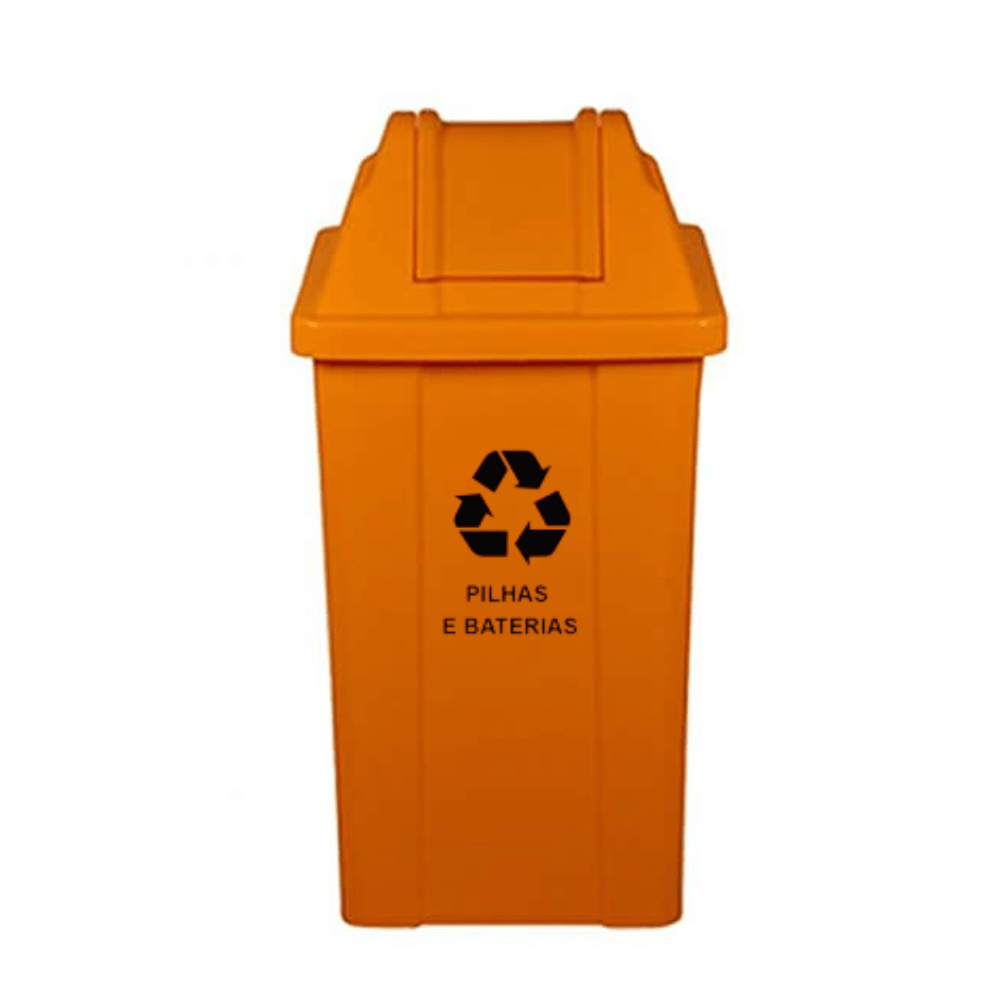
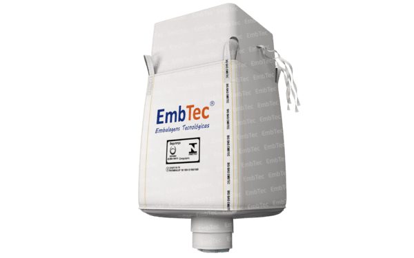

Resíduos Perigosos
Materiais perigosos podem contaminar solo, água e até mesmo causar riscos à saúde humana. É fundamental tratá-los com cuidado e dar o destino correto.
Exemplos Comuns
- Pilhas e baterias
- Óleo de cozinha usado
- Medicamentos vencidos
- Produtos de limpeza químicos
- Equipamentos eletrônicos com metais pesados
Riscos à Saúde
- Contaminação de lençóis freáticos
- Problemas respiratórios e neurológicos
- Risco de queimaduras e intoxicação
- Danos irreversíveis ao meio ambiente
Descarte Correto
- Entregue em pontos de coleta autorizados
- Nunca jogue no lixo comum ou esgoto
- Use embalagens seguras para transporte
- Procure campanhas de coleta especial
Dicas de Segurança

Use Locais Certificados
Muitos supermercados e farmácias possuem pontos de coleta de pilhas, baterias e medicamentos.

Proteja os Resíduos
Evite vazamentos usando embalagens lacradas para transportar materiais perigosos.
Informe-se
Consulte o site da prefeitura ou órgãos ambientais para saber onde descartar corretamente cada tipo de resíduo.
Impacto Ambiental
Os resíduos perigosos causam danos graves ao meio ambiente, contaminando água, solo e prejudicando a vida de animais e pessoas.
- Contaminação dos rios e lençóis freáticos
- Danos à fauna e flora local
- Risco de explosões e incêndios em aterros
- Acúmulo de substâncias tóxicas no solo